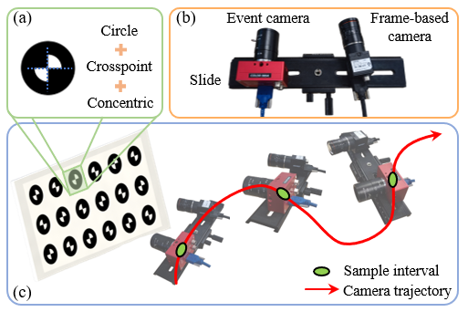
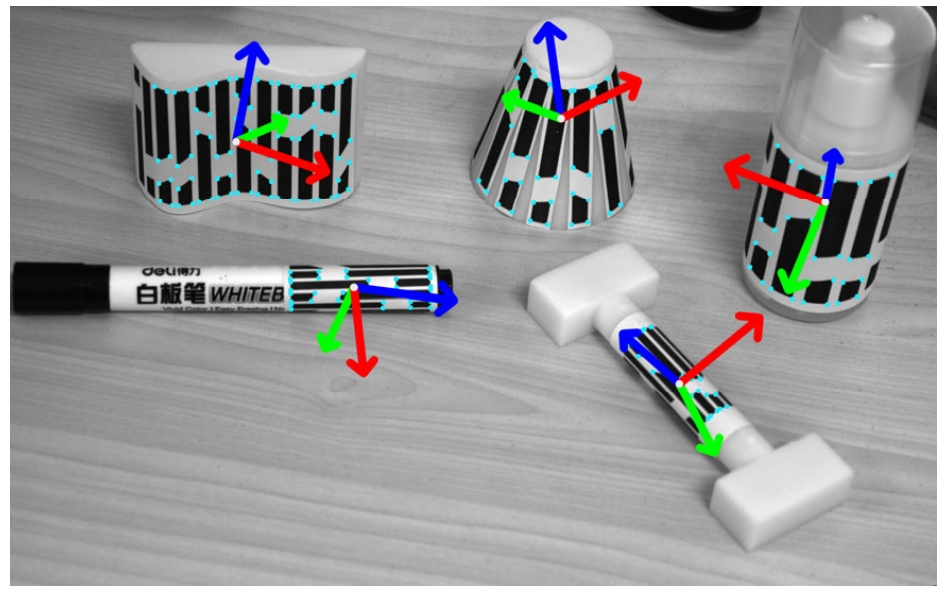

|
Shaoan Wang I'm a third-year PhD student at College of Engineering at Peking University, where I have been advised by Prof. Junzhi Yu. I completed my Bachelor's in Robotics at Beijing Institute of Technology, supervised by Prof. Huaping Wang. Nowadays, I'm interested in embodied AI, with a specific focus on multimodal robot perception and navigation, including both event‑based and image‑based modalities. In my previous work, I concentrated on achieving high‑precision pose estimation for curved surfaces by leveraging visual fiducial markers. Email / CV / Google Scholar / GitHub |
{kind=link}
Publications |
|  |
EF-Calib: Spatiotemporal calibration of event-and frame-based cameras using continuous-time trajectories
Shaoan Wang, Zhanhua Xin, Yaoqing Hu, Dongyue Li, Mingzhu Zhu, Junzhi Yu* Arxiv, 2024 [PDF] [BibTeX] [Code] A novel spatiotemporal calibration toolkit for event‑based and frame-based camera system. |

|
Spatially compact visual navigation system for automated suturing robot towards oral and maxillofacial surgery
Shaoan Wang, Qiming Zhao, Dongyue Li, Yaoqing Hu, Mingzhu Zhu, Fusong Yuan, Jinyan Shao, Junzhi Yu* IEEE Transactions on Instrumentation and Measurement, 2024 [PDF] [BibTeX] A spatially compact visual navigation system for autonomous OMS suture robot. |
|  |
CylinderTag: An accurate and flexible marker for cylinder‑shape objects pose estimation based on projective invariants
Shaoan Wang, Mingzhu Zhu, Yaoqing Hu, Dongyue Li, Fusong Yuan, Junzhi Yu* IEEE Transactions on Visualization and Computer Graphics, 2024 [PDF] [BibTeX] [Code] A visual marker based on projective invariance called CylinderTag is developed, which provides a new solution for high‑precision position estimation of curved objects. |
|
|
Accurate detection and localization of curved checkerboard-like marker based on quadratic form
Shaoan Wang, Mingzhu Zhu, Yaoqing Hu, Dongyue Li, Fusong Yuan, Junzhi Yu* IEEE Transactions on Instrumentation and Measurement, 2022 [PDF] [BibTeX] [Code] A subpixel corner detector for curved checkerboard-like markers based on quadratic form. |